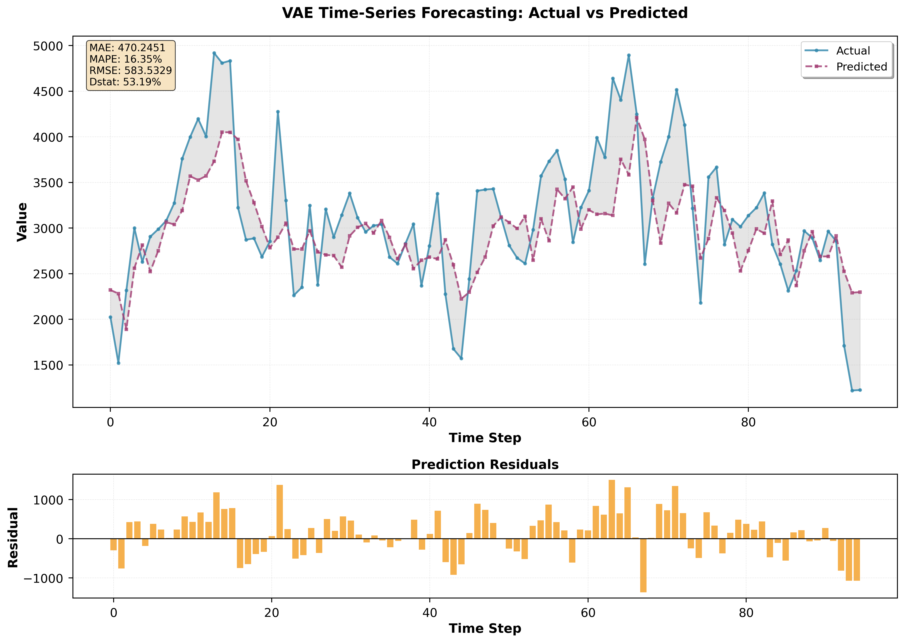

ARIMA model with Predicting One-Step AheadARIMA model with Predicting Both HorizonsARIMA model with Predicting Two-Step AheadARIMA 2nd model with Predicting One-Step AheadARIMA 2nd model with Predicting Two-Step AheadLSTM model with Predicting One-Step Ahead with GridSearchLSTM model with Predicting Two-Step Ahead with GridSearchLSTM model with Predicting Two-Step Ahead with OptunaLSTM 2nd model with Predicting One-Step Ahead with OptunaLSTM 2nd model with Predicting Two-Step Ahead with OptunaRNN 3nd model with Predicting One-Step AheadRNN 3nd model with Predicting Two-Step AheadRNN 3nd model with Predicting Both HorizonsRNN model with Predicting One-Step AheadRNN model with Predicting Both HorizonsRNN model with Predicting Two-Step AheadRNN 2nd model with Predicting One-Step AheadRNN 2nd model with Predicting Two-Step AheadTransformer model with Predicting One-Step AheadTransformer model with Predicting Two-Step AheadTransformer0 model with Predicting One-Step AheadTransformer0 model with Predicting Two-Step AheadTransformer 2nd model with Predicting One-Step AheadTransformerm 2nd model with Predicting Two-Step AheadVAE model with Predicting Both HorizonsVAE model with Predicting One-Step AheadVAE model with Predicting Two-Step AheadVAE 0 model with Predicting One-Step AheadVAE 2nd model with Predicting One-Step AheadVAE 2nd model with Predicting Two-Step Ahead

VAE HVN